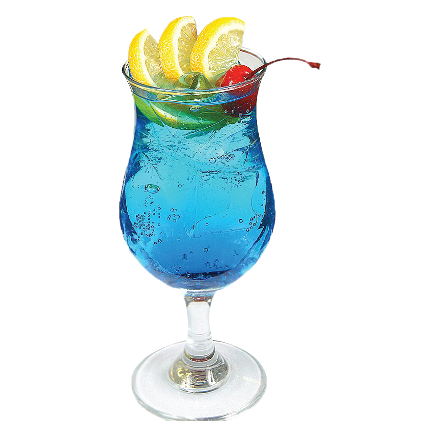

| ГЛАВНАЯ | Маргарита | Зелёная фея | Том Коллинз | Пина Колада | Текила Санрайз |
|  |
Способ приготовления:
|
Существует множество версий происхождения наименования. Есть мнение, что он назван в честь легендарной киноленты «Голубая лагуна». Другая версия гласит, что после поездки бармена Энди в Исландию, на термальный курорт с названием «Lagoon blue», сразу появилось его алкогольное творение. Энди настолько был поражен исландскими первозданными красотами, что не смог остаться в стороне.
Энди является сыном легендарной личности – бармена Гарри МакЭлона, который является автором нескольких пособий по созданию коктейлей и популярных сегодня напитков
Есть более красивая легенда, повествующая о появлении коктейля. Если верить ей, то изобрел его Поль Гоген. Произошло это во времена, когда под запрет попал абсент. Когда художник попал на Таити он наслаждался все алкогольными напитками острова, смешивал их. В результате у него получился коктейль Голубая лагуна. Но, у этой версии нет ни одного исторического подтверждения.
К рецепту